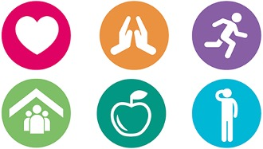

6 Lifestyle
6.1 Introduction
The purpose of today’s session is to bring together the information and skills we have developed during the course. It’s also a chance to reflect on how we can apply the skills developed in the future. During the programme we have discussed the impact of mood on cognitive functioning, and in turn the impact our cognitive functioning can have on our mood. During session 5 we identified the links between our thoughts-feelings-body sensations-behaviour. We identified some ‘unhelpful thoughts’ about our memory and ourselves, and thought about how to challenge these. We also had an introduction to the benefits of mindfulness. Both of these skills can help us to maintain good mental health and wellbeing. This is important for our cognitive functioning generally and memory in particular. It’s also really important to consider how we can maintain good physical and emotional health – our general well-being. This is because our cognitive functions do not operate in isolation: they are impacted by our physical health. For example, our heart and blood vessels carry important oxygen and nutrients to brain cells, vital for efficient cognitive functioning. During today’s session we will think about what we can do to promote our physical and emotional well-being.
6.2 Mindfulness
As we said in the last session, when you come into each session there may be lots of things on your mind. You might have thoughts about what you’ve been doing, what you need to do, maybe some expectations or perhaps worries about what the group itself will be like. Our minds often wander and life is sometimes filled with stresses or worries. To start off today, and at the beginning of our future sessions, we will carry out a brief breathing exercise. The aim of this is just to help us be more present ‘in the moment’, and give us some time to become more aware of our thoughts, feelings and any physical sensations. As we’ll see later in the course, this can also support our cognitive functioning and help our memory along with promoting overall well-being. If you have difficulty focusing on the breath (e.g. due to breathing difficulties) then go at a pace that feels comfortable to you, stop the meditation or focus on another part of your body, such as your feet.

6.3 Diet
Eating a varied and well-balanced diet is good for our general well-being – a mix of plenty of carbohydrate, plenty of fresh fruit and vegetables some protein and dairy if possible (or other sources of calcium), and just a small amount of food/drinks that are high in fat or sugar. The plate below shows a healthy balanced diet, which helps to keep cholesterol and blood pressure low. It can also support our cognitive functioning.
There has been lots of research into what particular food groups or nutrients may support cognitive functions and memory. There are also certain foods that can help promote a healthy brain such as Omega 3 fatty acid (nuts, seeds, olive oils and oily fish) and antioxidants (broccoli, blueberries and spinach). There is some evidence that B vitamins, especially B12, may also support memory functioning as we get older. Overall it seems that a healthy, varied diet is important rather than any one food group alone.
6.4 Exercise
Regular exercise helps to improve our overall health and reduce the risk of developing illness or health problems that impact on cognitive functioning. Research shows that several cardiovascular risk factors (including obesity and high blood pressure) are also risk factors for cognitive decline, so exercise can aid both physical and cognitive well-being.
Exercise also improves the flow of blood and oxygen to the brain, helping us to perform better mentally. It boosts the release of endorphins, or so-called ‘feel good’ hormones; and lots of research suggests that it can have a good impact on our emotional well-being and symptoms of stress, anxiety or low mood.
Current guidelines recommend that adults take part in moderate exercise for the equivalent of 30 minutes, 5 days a week (or 75 minutes of more vigorous exercise spread across the week). Moderate exercise means doing something that raises your heartbeat, but that you can do whilst holding a conversation.
Examples include going for a brisk walk or pushing the lawnmower, so it may be easier than we sometimes think to incorporate exercise into our daily routine. For example, getting off the bus a stop early or walking to the shop rather than driving all count. Like all skills, it will take some time to notice the benefits that exercise brings, but keeping going on a regular basis will maximise those benefits.

6.5 Sleep
Sleep is very important and can play a huge part in the memory process. If we are feeling tired then this can make our memory worse. You may notice that when you have had little sleep it is difficulty to focus on a task or to retain information. It is recommended that you have around 6-9 hours, but this can differ from each person. There are some tips below to help you have good sleep hygiene.
- Try to go bed at the same time each night and wake up at the same time.
- Avoid caffeine, alcohol, nicotine and heavy meals before going to sleep.
- Try to do regular physical exercise, but avoid this 2 hours before bedtime.
- Have a warm bath before bed time.
- Try some relaxation exercises such as mindfulness or light yoga.
- Try to make your bedroom a relaxing environment- avoid electronics, noise and light.